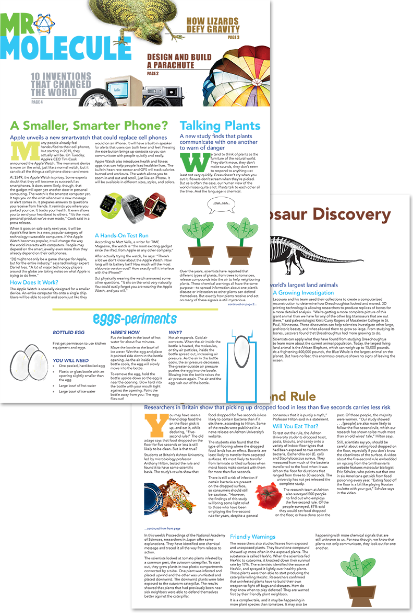

<div id="custom-content" class="white-popup" >
  <div class="row">
  <div class="col-md-7">

 </div>


 <div class="bottom-align-text col-md-5">
   <h2>Newsletter</h2>

  
 <p>This science newsletter was intended for children age 8-12 years old, meaning it needed to be designed in a way that was engaging for that specific age group.  I used bright colours, bold typography along with large and dynamically-placed images to grab attention in the flag and create interest for the rest of the publication. 
</p>
 </div>
 </div>